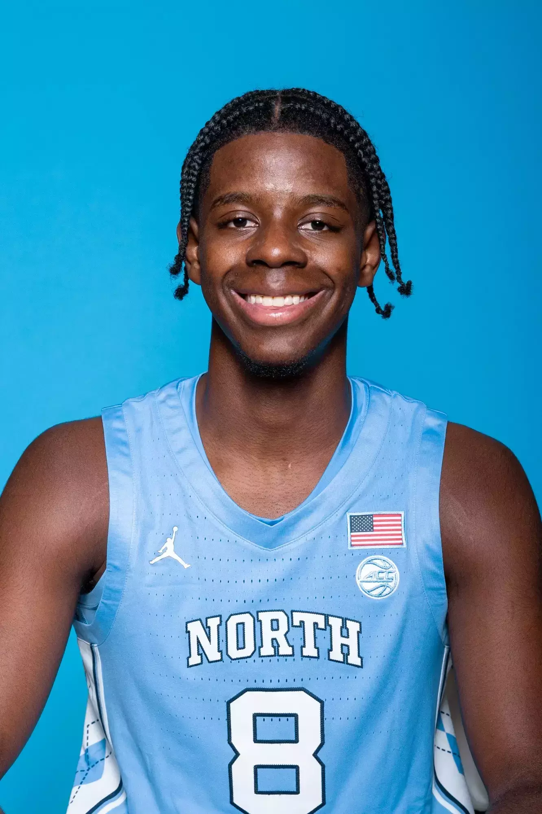

2026 NBA Draft
Caleb Wilson
Scouting report workspace for notes, evaluation context, and final draft outlook.

Stats
Offensive Stats
Defensive Stats
Info
School: UNC | Class: Freshman | Position: PF | Height: 6'10" | Weight: 215 | Wingspan: 6'11"
NBA Comparison:
2-Way Athletic Versatile Wing
Ceiling: Giannis Antetokounmpo/Bam Adebayo
Archetype: Floor: Aaron Gordon
Strength
Wilson is a long, mobile forward who shines in transition, where his fluid strides, body control, and strength allow him to finish through contact or draw fouls. In the half-court, he shows a workable face-up game, getting to the elbows or baseline for mid-range jumpers or fadeaways, and he flashes playmaking ability when he draws multiple defenders. With improved ball-handling, he could become a difficult mismatch due to his combination of size, coordination, and touch. Defensively, his activity and switchability stand out, and his instincts for loose balls help create easy offense. He still needs more reps against quicker guards to evaluate his full versatility on that end.
Weakness
The biggest thing that Wilson needs to work on would be his shooting. Not just his three point shot that needs to be developed, but if he can develop a consistent mid range/post up shot, he can be a very dangerous player in the league. As of right now, his off-ball value is still limited. Without a reliable outside shot or spot-up threat, he can clog spacing when not involved in actions, and his shot creation is still developing. He has improved, but he can still force difficult finishes rather than create cleaner looks. Wilson's other issue is inconsistent effort. When he plays with intensity, he can impact the game on both ends through physical scoring, defensive versatility, and rotational playmaking. Too often, though, he relies on length rather than discipline or effort, which may not translate to higher levels.
Outlook
Overall, Wilson has the tools to become one of the best defenders in the class and offers real offensive upside if he plays with more consistent aggression and sharpens his skill set. His combination of size, mobility, and feel makes him one of the most naturally gifted prospects in the draft. A fitting comparison is Bam Adebayo, not only because of the mid range heavy shot profile and playmaking flashes, but also due to his defensive versatility, the ability to switch, guard multiple position, and anchor actions without being a traditional rim protector. With his athleticism, fluid movement, and comfort operating in space, Wilson projects as an ideal fit in pick and roll actions and in an up tempo transition system where his two way impact can shine.